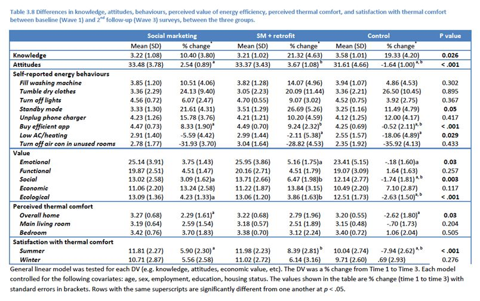

Tools Used
- Building Motivation Over Time
- Financial Incentives and Disincentives
- Overcoming Specific Barriers
- Home Visits
- Mass Media
- Word of mouth
Partners
Commonwealth Department of Industry’s Low Income Energy Efficiency Program (LIEEP)
Energy+Illawarra
Energy+Illawarra is a community oriented strategic social marketing program with the aim of supporting home energy efficiency, comfort and wellbeing among 830 older, low-income people in the Illawarra, NSW, Australia.
Background
Note: To minimize site maintenance costs, all case studies on this site are written in the past tense, even if they are ongoing as is the case with this particular program.
Energy+Illawarra was funded as part of the Commonwealth Department of Industry’s Low Income Energy Efficiency Program (LIEEP). Energy efficiency was a timely concern in the context of climate change, sustainability, fuel poverty and associated health, comfort and wellbeing issues (COAG Energy Council, 2015).
An interdisciplinary approach was taken, involving collaboration between social marketers, engineers, human geographers, community groups, professional organisations, retirement village providers and local councils to share insights, knowledge, learning, and to deliver the social marketing behaviour change programme.
Social ecological theory, social practice theory, and consumer value theory informed program design, delivery and evaluation.
Setting Objectives
The program objectives were to positively influence older, low-income consumers’ awareness, knowledge, attitudes and behaviours, and the structural and environmental conditions relating to energy use in the home. Specific targets were not set.
Getting Informed
A baseline and follow up evaluation survey featured, with a longitudinal cohort conducted at baseline in 2014 with an intervention group of 830 intervention participants and a control group of 614, to measure their knowledge, attitudes, values and behaviours in relation to energy efficiency and thermal comfort. A key outcome from the baseline survey was segmentation analysis using value theory. This involved the development of a segmentation strategy based on consumer’s perceived value of using energy efficiently (Gordon et al., 2015). This generated 4 key market segments: Frugal Eco Warriors, Value Opportunists, Independents, and Ambivalents. Each segment was engaged with tailored and positioned marketing strategies in the Energy+Illawarra program.
Extensive formative qualitative research using focus groups and in-home ethnographies were also undertaken. These drew upon social practice theory to gain deeper insights and understanding of the realities, needs, wants, and everyday practices and practicalities of using energy among this population group (Waitt et al. 2016).The market research insights generated from the formative research helped inform the strategies and tactics of the social marketing program (Butler et al., 2016; Cooper et al., 2016)
Delivering the Program
A strategic social marketing intervention mix was then used in Energy+Illawarra, drawing upon a broad range of techniques, tools and strategies, taking a socio-ecological approach and being directed based on the baseline and formative research phases.
Overcoming Barriers
Our formative research and competitive analysis identified key barriers to promoting energy efficiency while maintaining comfort and wellbeing in the home. This section describes how the program addressed each of these.
Confusion / Misinformation
A lot of myths and conflicting information exist for what is and is not efficient. This was addressed by acknowledging these narratives (e.g. through storytelling videos, newsletters, and the home energy book) and then countering myths and misunderstandings with technical and scientific facts on how to be energy efficient.
Similarly, conflicting information from different energy providers and various suppliers of energy efficient installations regarding solar panels, hot water systems etc. confuse and compete so that some chose not to act. All programme communications sought to provide independent and objective advice on energy efficient instillations. These were referenced to freely available comparison tools and consumer advice fact sheets to help inform consumers.
Habit
Non-efficient behaviours are often a force of habit. There was a need to break the routine. Being energy efficient requires a lot of thought and effort, and some find it a real challenge. This was addressed by presenting advice through all programme communications on how energy efficient behaviours could be easily managed and embedded into daily routines. Different communication approaches were used to engage different types of participants in terms of communication preferences, for example written information in the home energy books, visual information in the storytelling videos, verbal and face-to-face communication in the workshops and retrofit programme. The retrofit programme also focused on ensuring that energy efficient technologies and installations were easy to manage, use and embed within daily routine. Support packages were provided with the retrofit programme including training, advice, and a technical support phone line. (Vivid. Personlized, Credible, Empowering Communication)
Health concerns
Health concerns, such as someone in the household having dementia, meant that energy consumption was regarded as less important than comfort and wellbeing of householders. This was addressed through our definition of energy efficiency used in the Energy+Illawarra programme that acknowledged health and wellbeing as being an important part of the conversation about energy efficiency. All counter narratives, fact, advice and support provided to project participants was focused not only on using energy efficiently but on maintaining or protecting health and wellbeing. The project team also lobbied government policy makers on the importance of acknowledging health and wellbeing as being an important consideration, and the project team are now undertaking follow up research investigating the nexus between ageing, health and wellbeing and domestic energy consumption. (Overcoming Specific Barriers)
Not Commonly Talked About
Energy efficiency is not commonly talked about so it is challenging to find out good advice from social networks. This was addressed by running a series of community workshops and open days promoting energy efficiency and encouraging community members to become community champions to share knowledge about being energy efficient. The storytelling videos also encouraged people to share knowledge about energy efficiency with their social networks.(Building Motivation and Engagaement OIver Time; Word of Mouth)
Long Payback Period
Installations of solar power are considered inappropriate to this age group due to the length of time it takes to pay back and gain benefit. The retrofit programme, home energy book, newsletters, and storytelling videos discussed the benefits of using solar power and new storage batteries to power the home, rather than as a mechanism for selling power back to the grid. (Overcoming Specific Barriers)
Cost
It can be expensive to replace or purchase energy efficiency appliances such as solar hot water systems or refrigerators and replace inefficient appliances. The retrofit programme provided free energy efficient installations in people’s homes including solar hot water systems, and fridges. Information on discount schemes, and government subsidies for energy efficient instillations and appliances was also promoted in Energy+Illawarra materials.(Incentives)
Low Government Support
Perceived lack of government support or investment in environmental sustainability related policies and programs. A key component of the Energy+Illawarra programme was media and public relations, and advocacy and lobbying of policy makers. We presented energy policy makers with our research insights and advocated for stronger support for households to be energy efficient. Our input helped inform the subsequent National Energy Productivity Plan published in late 2015. Our media and public relations work also addressed some of the concerns and issues that our participant group experienced and publicised these in the national and local media. This helped stimulate conversations on providing more and better communicated resources, materials and knowledge to support energy efficiency in the community. (Overcoming Specific Barriers)
Restrictions and Approvals
NSW Housing Commission residences are not permitted to make major changes to their homes, e.g. access government incentives such as insulation and solar panels. Renters experience barriers to make household changes having to seek approval from real estate agents and owners. Although the terms of our project contract meant we could not engage NSW Housing Commission householders we lobbied policy makers about the importance of not omitting this group from energy efficiency programmes. As a result, a new energy efficiency programme working with housing commission residencies in NSW been launched. This will also involve working with privately rented households and landlords to promote energy efficiency in rented homes. (Overcoming Specific Barriers)
Retrofit-Specific Barriers
Key barriers to the instillation of recommended energy efficiency retrofits included:
- Concerns about water temperature
- Issues with roof structure
- Longevity of the new system being installed
- Maintenance concerns
- Aesthetics
Intervention Activities
The consumer oriented retrofit programme included a comprehensive audit of each household, development of a selection of recommended retrofit options for householders to select from, and extensive engagement and consultation with each household regarding their preferred retrofit package that accounted for their aesthetic and taste preferences, and practices of making home. (Vivid, Personalized, Credible, Empowering Communication)
The following specific intervention activities were featured in the program.
Newsletters
To help consumers reflect upon and inform their energy practices, 9,000 newsletters across the three phases were disseminated to project participants, and around the community through project partners, policy makers, media contacts, and 29 local community centres and groups.
Home Energy Books
For the same purpose, 1,000 Home Energy Use books that collated and extended on the information from the newsletters and storytelling videos, provided information about the project research and outcomes, and contained links to additional information, resources and support were posted to project participants, and distributed to the broader community.
Energy Efficiency Products
1,000 branded fridge magnet thermometers, and 1,000 remote control power sockets were produced and distributed. These products were used as a disruptive technology to encourage efficient practices.
Storytelling Videos
To encourage reflection about energy use practices and behaviour transformation, 10 community oriented and people centred storytelling videos about energy use and efficiency were produced. Videos feature stories from real participants about energy use, utilising transcripts from the formative research. Videos also provide advice and facts about energy efficiency and feature explanatory visual animations. Videos were uploaded to YouTube and the project website and were promoted by Facebook posts, and Twitter links. 100 branded LCD brochures featuring the 10 storytelling videos were disseminated through the same community networks listed above.
Website and Social Media
To foster community conversations and sharing of knowledge, the project website www.energyplusillawarra.com.au was developed and contains information on the project, news items, newsletters, the storytelling videos, details on media coverage, links to relevant services, and project research findings, including conference papers and journal articles. Between launch on 1st June 2015 and 1st June 2016 the website attracted 2,268 distinct sessions, across 1,550 different users, with an average website visit duration of 2 minutes and 40 seconds. Visits to the website were split by 68.3% new visitors, and 31.7% returning visitors.
Social media was also utilised for the same purposes. A Facebook page was created (https://www.facebook.com/energyplusillawarra?fref=ts) and regular posts about energy efficiency and energy use in the home were made. Paid Facebook advertising was also used to promote the page. From its launch on 1st June 2015 to 1st June 2016, it attracted a total of 306 unique user likes, 339 reactions, comments and shares, and 410 post clicks form of engagement. Links to the project resources were also promoted using existing Twitter accounts of project team members and their networks.
Posters and Advertising
Alert to the importance of print media for consumption of communications and messaging in the lives of older, low-income people, 500 posters about a series of different energy use practices and which advertised the storytelling videos, facts, and calls to action to visit the project website were disseminated through the same community centres and networks listed above. Paid were placed in local print media, with six large advertisements in the Illawarra Mercury, two in the South Coast Register, and one in the Milton-Ulladulla Times.
Energy Efficiency Retrofits
Alive to the impact of the built environment and household dynamics on energy use, 200 randomly selected homes (from the intervention group) received tailored energy efficiency retrofits and instillations, ranging from new lighting, pipe lagging, solar panels, air conditioners, window shading, heat pumps, hot water systems and refrigerator upgrades. A consumer oriented and co-creative process was followed in which engineers conducted home audits and follow up consultations. These consultations built trust and rapport with participants and helped develop consensus with householders about what retrofits were appropriate and aligned with their personal needs and wants. 40 randomly selected participants (of the 200) received a support package of additional technical advice and guidance, and participation in the ethnographic study.
Community Training
To help build knowledge and capacity for conversations about energy efficiency in the broader community, project partner WEA Illawarra delivered 25 community events in the region to share insights, stories, and provide advice and support for people to use energy efficiently. The stories utilised in the storytelling videos were used to encourage people to reflect on practices of energy use in their homes and initiate conversations and peer-to-peer support of energy efficiency.
Media and Stakeholder Advocacy
To help influence the broader structural environment in which home energy practices occur, media and stakeholder advocacy was undertaken. A media advocacy strategy was used to generate coverage about Energy+Illawarra research insights, marketing messages, and milestones. This generated 21 different news items on national and local television, radio, and printed media. Items included radio interviews on ABC Sydney/Illawarra/South Australia/Newcastle, television features on WIN news and UOW TV, and newspaper articles in the Sunday Telegraph, the Illawarra Mercury, The South Coast Register, the Maitland Mercury, the Milton Ulladulla Times, and online news media. Details of Energy+Illawarra media coverage feature on the project website. Extensive engagement and advocacy with policymakers from the Commonwealth Government, Southern Councils Region and other relevant stakeholders including energy retailers in meetings and forums was also undertaken to share findings and insights, and influence policy discourse.
Measuring Achievements
A three-wave randomised control cohort study permited evaluation of the actual effects of the programme on outcomes.
A baseline and follow up evaluation featured, with a face to face longitudinal cohort survey conducted at baseline in 2014 with an intervention group of 830 intervention participants and a control group of 614, to measure their knowledge, attitudes, values and behaviours in relation to energy efficiency and thermal comfort. A follow up survey was conducted in 2015 during the implementation of Energy+Illawarra with the same cohort of 639 intervention participants and 316 control group participants (both accounting for sample attrition). A final evaluation survey was conducted post intervention in 2016 with the same cohort of 539 intervention participants and 188 control group participants (again accounting for sample attrition).
Results
Energy+Illawarra only finished in December 2016. Therefore, at this stage evaluation analysis on actual energy use data are only at the preliminary stage. The following insights can be shared at this time; additional information will be provided as it becomes available.
A longitudinal randomised control group evaluation survey found that Energy+Illawarra led to a statistically significant increase in positive attitudes towards energy efficiency, perceived emotional, ecological and social value of using energy efficiently, perceptions of thermal comfort in the home, and key outcome behaviours of buying energy efficient appliances, and decreasing the temperature of heating and cooling devices in the home. See table below.

Modeling analysis on recorded energy use data in the retrofitted homes found that median energy use reduced, and projected future cost savings for retrofit recipients of $2,893 per household over ten years.
In all there were 830 participating households. 180 took part in the social marketing including a home retrofit programme, with the remainder taking part in the social marketing programme with no retrofit.
Among the 180 taking part in the retrofit component estimated total cost savings over 10 years = $520,688. The direct cost-benefit ratio estimated from the possible future energy savings from the Retrofit program against the cost of delivery was of order cost/benefit = $826,327/$520,688 = 1.6.
However, as noted before energy billing data on each participant’s kWh and $ value energy use has also been collected. Due to the complexities, and time scales involved in collected and analysing this data, findings that can evaluate the impact of Energy+Illawarra on kWh and $ value energy consumption will be available in 2018.
Contacts
ross.gordon@mq.edu.au
Associate Professor Ross Gordon ross.gordon@mq.edu.au
(+61) 02 9850 8559
Notes
- Our interdisciplinary approach was a key strength. However, programme managers should be aware that effective interdisciplinary collaboration requires adequate time and funding, planning and workshopping, and an openness to new ideas perspectives and being critically reflexive to understand and acknowledge different ontologies, perspectives and solutions.
- Consumers co-created our programme. Programme managers should consider how they can empower householders to make decisions about energy efficiency interventions in their homes.
- Our observations from the formative research phase identified that many older low income people used very little energy, and at times this could come at risk to their comfort, health and wellbeing (see Waitt et al. 2016). Therefore, Energy+Illawarra did not have a sole focus on energy efficiency in terms of reducing energy consumption. Rather, our focus was on using energy efficiently while also maintaining or increasing comfort and wellbeing in the home. This was reflected in our definition of energy efficiency used in the programme “Energy efficiency is using energy wisely and economically to sustain everyday life, live comfortably and support wellbeing”. Essentially, we sought to redefine energy efficiency in this context, and our new definition featured throughout all project activities. Our follow up project, funded by Energy Consumers Australia in 2017, aims to further investigate the nexus of energy use, health and ageing among older Australians. Energy researchers should be encouraged to consider issues of health, wellbeing and comfort in the home when promoting energy efficiency – especially among older low income people.
This case study was wrtitten in 2017 by Ross Gordon.